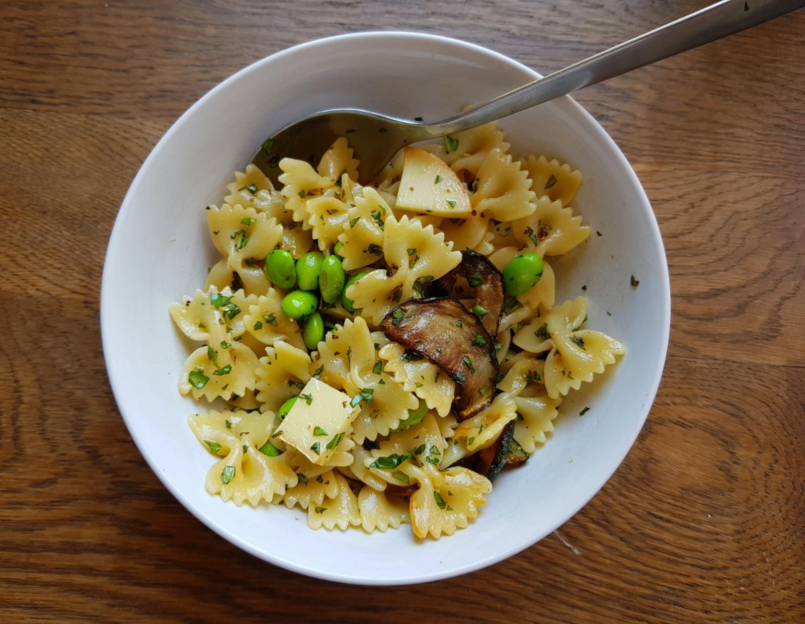

Makes 2 portions.
- Farfalle pasta, 220g
- 1 courgette
- 50g Scamorza affumicata
- Handful fresh basil leaves
- Half-handful fresh Parsley
- Handful frozen edamame beans
- Lemon zest

-
Fry the courgette in light olive oil on both sides until brown. Set aside.
-
Boil the pasta until al dente, adding the frozen edamame beans 1 minute before draining.
Drain and run under cold water, then leave to dry. -
Finely chop the basil and parsley. Add salt, pepper, lemon zest.
-
Chop the Scamorza (or Mozzarella) into small pieces.
-
Mix everything together with good olive oil.
Notes:
Taken from Ottolenghi’s Plenty - Pasta with fried courgette.
Should try with mozzarella, and red wine vinegar for the courgette.